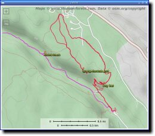
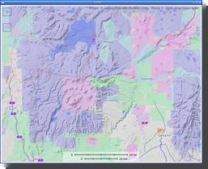

{kind=link}
{kind=link}
![[San Francisco/OpenStreetMap PyTopo screenshot]](screenshots/sf-ss.jpg)
![[White Rock DOE/OpenCycleMap PyTopo screenshot]](screenshots/doe-ss.jpg)
![[Trails above Lexington reservoir/USGS PyTopo screenshot]](screenshots/lexington-ss.jpg)
![[PyTopo for Linux]](topoicon.jpg)
PyTopo is an open source tiled map viewer, written in Python and GTK. It can download and cache tiles from OpenStreetMap or other map tile servers, or you can make your own local tiled maps or use commercial datasets.
PyTopo can also show tracks and waypoints in several different formats, can save favorite places, and has some rudimentary track editing ability.
Downloaded map tiles are cached forever (or until you remove them), so you can download tiles and then use PyTopo offline if, like me, you often travel to places where there's little or no internet access.
Why does PyTopo exist? I needed a local, offline mapping program that worked on Linux.
I like to travel to remote locations with no network access, and of course I want maps once I'm there. When I first started PyTopo, smartphones didn't exist yet, but even in the smartphone age I often want a larger map than I can show on a phone screen. I use PyTopo at home for reviewing logs from hikes, and for exploring track and waypoint data for places I plan to go. (In the field, I use OsmAnd, an excellent open-source Android offline mapping app.)
Originally PyTopo was written to use data from National Geographic's commercial Topo! data CDs. Since then, it has expanded to use tiles from OpenStreetMap and any other tile server that uses the same naming conventions. (But not Google Maps, since Google's terms of service doesn't permit other programs to use their tiles.)
PyTopo is available on PyPI:
pip install pytopo
It installs two programs: pytopo, the map viewer, and ellie, which shows track log statistics. If you have matplotlib installed and your track log has elevations, ellie can plot them.
Some of PyTopo's requirements may require a C compiler and Python development headers.
PyTopo's source is hosted on Github if you want the latest and greatest. You can pip install it from the source directory with:
pip install .
PyTopo uses the GTK3 toolkit. If you install it via pip, it requires PyGObject and pycairo, which pull in the rest of the GTK3 dependencies. It also requires requests-futures (for downloading map tiles in the background), simplejson (for reading GPX and KML files) and numpy (for analyzing track statistics like distance). If you want to read from a GPS, you'll need gpsd and python-gps.
Ellie uses matplotlib for visualizing track logs. If you don't have matplotlib installed, it will just print summary numbers.
The first time you run pytopo, it will create a configuration file, typically ~/.config/pytopo/pytopo.sites (if it can't create that it will fall back to ~/.pytopo instead).
You might want to take a look at the file: this is where you can add additional map collections or sites you visit frequently. By default, pytopo will download OpenStreetMap tiles to ~/Maps. Of course, you can change that. See the PyTopo File Formats page for more details.
pytopo -p will print out a list of known sites.
With the initial default configuration you'll just have a few cities like
san-francisco, new-york, london, sydney.
pytopo -m will give you a menu of known sites.
| Left, Right, Up, Down | Scroll the map in the indicated direction. |
|---|---|
| +/=, - | Zoom in or out. |
| Space | Jump back to the pinned location. |
| m | Switch to a different known site |
| q | Quit |
You can move the map by dragging, and zoom with the mousewheel, as you'd expect. Right-clicking pops up a menu of other options.
Usage: pytopo
pytopo trackfile
pytopo known_site
pytopo [-t trackfile] [-c collection] [-o overlay] [-r] [site_name]
pytopo [-t trackfile] start_lat start_lon [collection]
pytopo -p : list known sites, collections and tracks
pytopo -r : re-download all map tiles that need to be shown
pytopo -h : print this message
Other flags:
-k keys : comma-separated list of fields (keys) to look for
when grouping polygonal regions.
-g : follow a GPS if available
-d[level] : debugging mode. Defaults to 1, level 2 shows a little more.
With no arguments, will display a menu of known sites
(defined in pytopo.sites).
Map collections are defined in pytopo.sites.
Overlays are also collections, drawn translucently on top of the base map,
and there can be more than one.
Track files may be in GPX, KML, KMZ or GeoJSON format, and may contain
track points and/or waypoints; multiple track files are allowed.
GeoJSON files may also contain polygons: use the -k option to specify
which field in the GeoJSON feature should be used for coloring groups.
Use decimal degrees for coordinates.
Set up favorite site names in ~/.config/pytopo.sites,
favorite track logs in ~/Tracks
Move around by dragging and zoom with the mousewheel, or use the keyboard:
Left/right/up/down: move in that direction
+/=/-: zoom in/out
spacebar: go back to last pinned location
m: bring up the site selection dialog
q: quit
Right-click gives a context menu.
Shift-click in the map to print the coordinates of the clicked location,
as well as distance and bearing from the last shift-clicked point,
to standard output.
|  |  |
|
| Trais at Bandelier National Monument, with track logs and waypoints (OpenStreetMap tiles from ThunderForest) | Land ownership overlay for a part of Northern New Mexico | San Francisco from the default setup (OpenStreetMap tiles). |
|
|
| |
| Trails and a waypoint in the DOE-owned lands near White Rock, NM, using OpenCycleMap tiles. | Tacklogs and waypoints from a Garmin GPS above Lexington reservoir near Los Gatos, CA, using USGS/Topo! topographic maps. |
PyTopo can read track logs in GPX, KML, KMZ or geojson format, and polygon overlay files in geojson. It shows each track in a different color. You can toggle waypoint visibility with the right-click context menu (for when there are too many waypoints and they get in the way of reading the map).
Select a track by left-clicking on it; split a track or delete everything before or after the mouse (right-click context menu again), and save a track as GPX after you've changed it.
You can also provide polygonal overlays from a GeoJSON file: for example, to colorize areas according to land ownership or geology.
PyTopo can also measure distances and bearing angles between points (shift-click and watch standard output), or report the coordinates at any point (right-click gives the coordinates at the top of the context menu; if you want to copy/paste, choose that menu item to print it to standard output).
For displaying or plotting distances and elevations, ellie is now included as part of the PyTopo install.
You can "Pin" a spot on the map and save it as a pinned location in your PyTopo configuration.
Change Background Map in the context menu will list all the MapCollections you have defined, and you can switch between them interactively.
When you first run PyTopo, it will create a file called config/pytopo/pytopo.sites giving you one MapCollection, for the basic OpenStreetMap tile set, and a few major cities as Known Sites.
You'll probably want to add your own Known Sites, so you can start PyTopo by passing it names of sites near you. There are two ways to do that. You can right-click on any position on the map and choose "Pin this location", then "Save pin location" and give it a site name. Or if you're not afraid of editing files, you can edit pytopo.sites to add your own sites by their latitude or longitude.
The pytopo.sites file is also the place to add new MapCollections, and for this you do have to edit the file (see below).
PyTopo can read polygons from a GeoJSON file and use them as colored
translucent overlays. Use the -k flag to specify which field in the
GeoJSON you want to use for grouping polygons. For example, the
screenshot above was generated with:
pytopo -k own Surface_Ownership_10_14_2015.geojson
using the land ownership data from NMU's RGIS as discussed
here.
To be able to click on a region and see its class, you'll need the shapely module.
There are lots of different types of MapCollection you can use. One useful one is to use map tiles from a different tile server. Most tile servers other than OpenStreetMap require you to sign up for an API key (which is usually free for light usage, but charges you for heavier usage). In that case your key will be encoded into the URL you set up in the MapCollection.
In the default pytopo.sites, there's an example of how to use the ThunderForest map server with an API key to retrieve OpenCycleMap tiles. It looks like this, specifying the name of the collection, the location on your local disk to cache the tiles, the size and type of the tiles, the default zoom level (your choice), the URL to use for downloading, the maximum zoom level (this is a function of the tile server), and an attribution string.
OSMMapCollection( "opencyclemap", # collection name
"~/Maps/opencyclemap", # where to cache
".png", 256, 256, # file type and size
13, # default zoom level
"https://tile.thunderforest.com/cycle/{z}/{x}/{y}.png?apikey=YOUR_API_KEY_HERE",
maxzoom=22, # maximum zoom level
reload_if_older=90, # reload if > 90 days
attribution="Maps © www.thunderforest.com, Data © www.osm.org/copyright"),
You can use the same syntax for many different tile servers to get a variety of different background map tile styles. ThunderForest has several nice styles besides OpenCycleMap: you'll see their list if you sign up for an API key. You can set up as many MapCollections as you want, either different styles from the same server or from different servers.
I don't currently know of a tile server that can serve satellite images, even with an API key. MapQuest used to offer this service but no longer does. Please tell me if you know of an alternate server. Note that the Google Maps terms of service do not allow using their tiles with non-Google mapping apps, so Google isn't an option.
Aside from OpenStreetMap tile srvers, pytopo can use local map data on disk or CD; for instance, from the old Topo! local area and specific park map packages sold in camping/hiking stores, sometimes under the aegis of National Geographic.
For Topo! CD datasets, use a Topo1MapCollection for regions or a Topo2MapCollection for the park map sets:
Topo1MapCollection( "deathvalley", "~/Maps/deathvalley", 7.5, 266, 328 ), Topo2MapCollection( "kingscanyon", "~/Maps/kingscyn", "topo", 410, 256 ),
Caution: the Topo! Back Roads Explorer and the statewide explorer collections are not in this friendly tiled format. They use large data files in a proprietary ".tpq" format. Tom Trebisky has analyzed the format and has written an extractor, and he also has a C GTK viewer for this format. I have not tried to integrate support into PyTopo; there are enough good online sources of maps now that I haven't seen the need to buy any more Topo! datasets myself.
PyTopo can use standard WMS tiles, so any way you generate such tiles will work. For instance, OpenStreetMap has a page on Creating Your Own Tiles, but unfortunately the process is fairly involved and poorly documented.
You can also make a tile set from GIS data using tools such as gdal_translate; see my blog post on Making Overlay Maps for OsmAnd on Linux.
Or you can split a large map image into tiles. For instance, for some areas, you can download USGS topo maps free. For instance, for California you can get maps in TIFF format from the California Spatial Information Library. You also may need to use specialized maps, such as geologic or land-use maps.
To use this sort of map, you have to split the large map into tiles. One way is to use ImageMagick, with a command like
convert in-map.jpg -rotate 90 -crop 300x300 -repage +0+0 out-map%02d.jpg
Note: previously I included -trim as part of that line, and a lot of pages you'll find googling for image splitting will tell you to use -trim. Don't: it will give you maps of inconsistent sizes, and pytopo will have no way to tell where the origin of the map should be.
If you want to contribute to PyTopo, or use the code for something else, you'll probably want to know more about the classes it uses; see the PyTopo API Documentation (automatically generated with Sphinx).
I wrote some older commandline helper scripts, but honestly, I don't use them myself and don't vouch for them. I list them here merely on the chance that someone might find one of them a useful building block:
PyTopo should run fine on any system which has Python, gtk, gdk-pixbuf, and PyGTK. I've tried to make the code as portable as I can, but I've only tested it on Linux. If it doesn't work for you, please let me know.